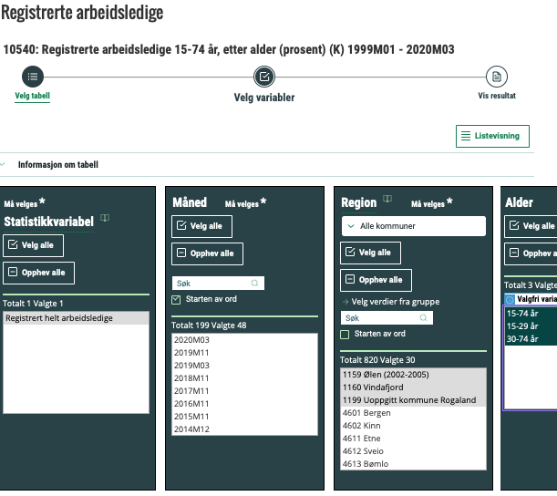
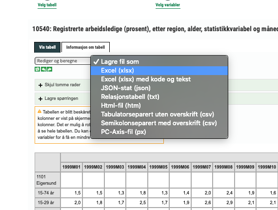
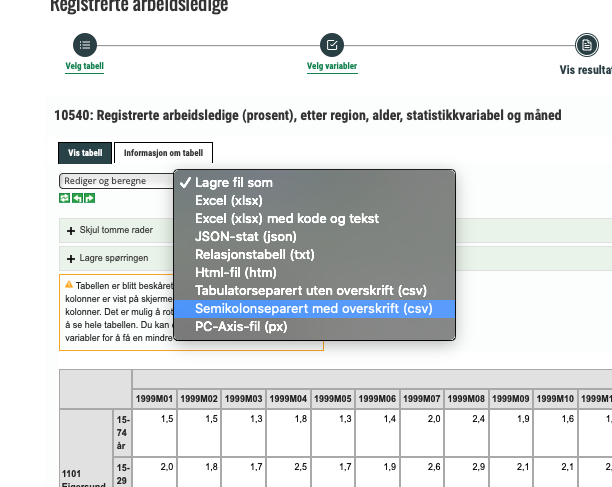
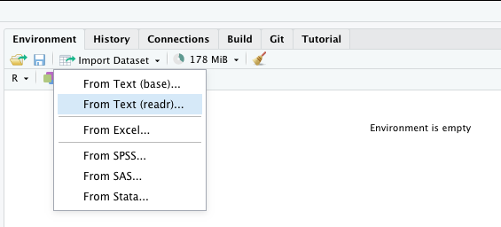
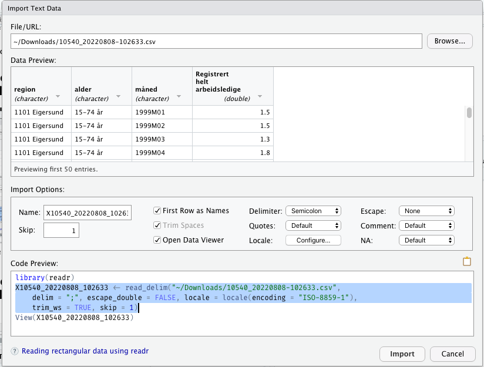

The SSB web page.
We can use the web-pages of SSB and download the data as .xlsx format and use the read_xlsx() function from the readxl package, (Wickham and Bryan 2025)
Generate the table in xlsx-format
The .xlsx File.

Note that:
util package read.table() and read.csv2().
read_table() and read_csv2() functions are “modern” equivalents of these classics.read.table since it’s possible to specify dec = "" and sep = "".
read.csv2 is a form of read.table() that already uses these options.
The modern ones uses locale(), but I could not get it to work properly.
Environment in the upper right pane i R Studio there is also an Import Dataset menu.Tidyverse library does not load the readxl package.
read_xlsx() function we will either have to use readxl::read_xlsx() or first load the readxl package with library(readxl)library() commands in an r-chunk called setup at the very start of your notebook.
readxl package you have to install it first.# A tibble: 15 × 4
...1 ...2 ...3 `Registrert helt arbeidsledige`
<chr> <chr> <chr> <chr>
1 1101 Eigersund 15-74 år 1999M01 1.5
2 <NA> <NA> 1999M02 1.5
3 <NA> <NA> 1999M03 1.3
4 <NA> <NA> 1999M04 1.8
5 <NA> <NA> 1999M05 1.3
6 <NA> <NA> 1999M06 1.4
7 <NA> <NA> 1999M07 2
8 <NA> <NA> 1999M08 2.4
9 <NA> <NA> 1999M09 1.9
10 <NA> <NA> 1999M10 1.6
11 <NA> <NA> 1999M11 1.5
12 <NA> <NA> 1999M12 1.6
13 <NA> <NA> 2000M01 2.1
14 <NA> <NA> 2000M02 1.9
15 <NA> <NA> 2000M03 2 # A tibble: 16 × 4
...1 ...2 ...3 `Registrert helt arbeidsledige`
<chr> <chr> <chr> <chr>
1 1101 Eigersund 15-74 år 1999M01 1.5
2 <NA> <NA> 1999M02 1.5
3 <NA> <NA> 1999M03 1.3
4 <NA> <NA> 1999M04 1.8
5 <NA> <NA> 1999M05 1.3
6 <NA> <NA> 2002M09 2.1
7 <NA> <NA> 2002M10 2.1
8 <NA> <NA> 2002M11 3
9 <NA> <NA> 2002M12 2.9
10 <NA> 15-29 år 1999M01 2
11 <NA> <NA> 1999M02 1.8
12 <NA> <NA> 1999M03 1.7
13 <NA> <NA> 1999M04 2.5
14 <NA> <NA> 1999M05 1.7
15 <NA> <NA> 1999M06 1.9
16 <NA> <NA> 1999M07 2.6 We must fix variable names
We must fill in for NAs in municipality names and age group
. . .
# A tibble: 16 × 4
knr_kname age_group year_month unempl
<chr> <chr> <chr> <chr>
1 1101 Eigersund 15-74 år 1999M01 1.5
2 1101 Eigersund 15-74 år 1999M02 1.5
3 1101 Eigersund 15-74 år 1999M03 1.3
4 1101 Eigersund 15-74 år 1999M04 1.8
5 1101 Eigersund 15-74 år 1999M05 1.3
6 1101 Eigersund 15-74 år 2002M09 2.1
7 1101 Eigersund 15-74 år 2002M10 2.1
8 1101 Eigersund 15-74 år 2002M11 3
9 1101 Eigersund 15-74 år 2002M12 2.9
10 1101 Eigersund 15-29 år 1999M01 2
11 1101 Eigersund 15-29 år 1999M02 1.8
12 1101 Eigersund 15-29 år 1999M03 1.7
13 1101 Eigersund 15-29 år 1999M04 2.5
14 1101 Eigersund 15-29 år 1999M05 1.7
15 1101 Eigersund 15-29 år 1999M06 1.9
16 1101 Eigersund 15-29 år 1999M07 2.6 knr_kname age_group year_month unempl
1 1101 Eigersund 15-74 år 1999M01 1.5
2 1101 Eigersund 15-74 år 1999M02 1.5
3 1101 Eigersund 15-74 år 1999M03 1.3
4 1101 Eigersund 15-74 år 1999M04 1.8
5 1101 Eigersund 15-74 år 1999M05 1.3
6 1101 Eigersund 15-74 år 1999M06 1.4
7 1101 Eigersund 15-74 år 1999M07 2
8 1101 Eigersund 15-74 år 1999M08 2.4
9 1101 Eigersund 15-74 år 1999M09 1.9
10 1101 Eigersund 15-74 år 1999M10 1.6
11 1101 Eigersund 15-74 år 1999M11 1.5
12 1101 Eigersund 15-74 år 1999M12 1.6
13 1101 Eigersund 15-74 år 2000M01 2.1
14 1101 Eigersund 15-74 år 2000M02 1.9
15 1101 Eigersund 15-74 år 2000M03 2
16 1101 Eigersund 15-74 år 2000M04 2.7
17 1101 Eigersund 15-74 år 2000M05 2.6
18 1101 Eigersund 15-74 år 2000M06 3.3
19 1101 Eigersund 15-74 år 2000M07 4.9
20 1101 Eigersund 15-74 år 2000M08 3.7
21 1101 Eigersund 15-74 år 2000M09 3.1
22 1101 Eigersund 15-74 år 2000M10 2.6
23 1101 Eigersund 15-74 år 2000M11 2.6
24 1101 Eigersund 15-74 år 2000M12 3
25 1101 Eigersund 15-74 år 2001M01 2.8
26 1101 Eigersund 15-74 år 2001M02 2.6
27 1101 Eigersund 15-74 år 2001M03 2.6
28 1101 Eigersund 15-74 år 2001M04 2.7
29 1101 Eigersund 15-74 år 2001M05 2.3
30 1101 Eigersund 15-74 år 2001M06 2.1
31 1101 Eigersund 15-74 år 2001M07 2.7
32 1101 Eigersund 15-74 år 2001M08 2.6
33 1101 Eigersund 15-74 år 2001M09 2.2
34 1101 Eigersund 15-74 år 2001M10 2
35 1101 Eigersund 15-74 år 2001M11 2
36 1101 Eigersund 15-74 år 2001M12 2.1
37 1101 Eigersund 15-74 år 2002M01 2.3
38 1101 Eigersund 15-74 år 2002M02 2.2
39 1101 Eigersund 15-74 år 2002M03 2.1
40 1101 Eigersund 15-74 år 2002M04 2.3
41 1101 Eigersund 15-74 år 2002M05 2
42 1101 Eigersund 15-74 år 2002M06 1.7
43 1101 Eigersund 15-74 år 2002M07 2.4
44 1101 Eigersund 15-74 år 2002M08 2.4
45 1101 Eigersund 15-74 år 2002M09 2.1
46 1101 Eigersund 15-74 år 2002M10 2.1
47 1101 Eigersund 15-74 år 2002M11 3
48 1101 Eigersund 15-74 år 2002M12 2.9
49 1101 Eigersund 15-29 år 1999M01 2
50 1101 Eigersund 15-29 år 1999M02 1.8
51 1101 Eigersund 15-29 år 1999M03 1.7
52 1101 Eigersund 15-29 år 1999M04 2.5
53 1101 Eigersund 15-29 år 1999M05 1.7
54 1101 Eigersund 15-29 år 1999M06 1.9
55 1101 Eigersund 15-29 år 1999M07 2.6
56 1101 Eigersund 15-29 år 1999M08 2.9
57 1101 Eigersund 15-29 år 1999M09 2.1
58 1101 Eigersund 15-29 år 1999M10 2.1
59 1101 Eigersund 15-29 år 1999M11 2
60 1101 Eigersund 15-29 år 1999M12 2.5
61 1101 Eigersund 15-29 år 2000M01 3
62 1101 Eigersund 15-29 år 2000M02 3.3
63 1101 Eigersund 15-29 år 2000M03 2.7
64 1101 Eigersund 15-29 år 2000M04 3.9
65 1101 Eigersund 15-29 år 2000M05 3.6
66 1101 Eigersund 15-29 år 2000M06 4.8
67 1101 Eigersund 15-29 år 2000M07 6.1
68 1101 Eigersund 15-29 år 2000M08 5.1
69 1101 Eigersund 15-29 år 2000M09 4
70 1101 Eigersund 15-29 år 2000M10 3.3
71 1101 Eigersund 15-29 år 2000M11 2.9
72 1101 Eigersund 15-29 år 2000M12 3.5
73 1101 Eigersund 15-29 år 2001M01 3.8
74 1101 Eigersund 15-29 år 2001M02 3.4
75 1101 Eigersund 15-29 år 2001M03 3.5
76 1101 Eigersund 15-29 år 2001M04 3.3
77 1101 Eigersund 15-29 år 2001M05 2.9
78 1101 Eigersund 15-29 år 2001M06 2.2
79 1101 Eigersund 15-29 år 2001M07 3.1
80 1101 Eigersund 15-29 år 2001M08 3.7
81 1101 Eigersund 15-29 år 2001M09 2.9
82 1101 Eigersund 15-29 år 2001M10 2.5
83 1101 Eigersund 15-29 år 2001M11 2.6
84 1101 Eigersund 15-29 år 2001M12 2.7
85 1101 Eigersund 15-29 år 2002M01 2.8
86 1101 Eigersund 15-29 år 2002M02 2.7
87 1101 Eigersund 15-29 år 2002M03 2.7
88 1101 Eigersund 15-29 år 2002M04 2.6
89 1101 Eigersund 15-29 år 2002M05 2
90 1101 Eigersund 15-29 år 2002M06 2.2
91 1101 Eigersund 15-29 år 2002M07 3.1
92 1101 Eigersund 15-29 år 2002M08 3.4
93 1101 Eigersund 15-29 år 2002M09 2.6
94 1101 Eigersund 15-29 år 2002M10 2.7
95 1101 Eigersund 15-29 år 2002M11 3.9
96 1101 Eigersund 15-29 år 2002M12 3.8
97 1101 Eigersund 30-74 år 1999M01 1.3
98 1101 Eigersund 30-74 år 1999M02 1.3
99 1101 Eigersund 30-74 år 1999M03 1.1
100 1101 Eigersund 30-74 år 1999M04 1.5
101 1101 Eigersund 30-74 år 1999M05 1.2
102 1101 Eigersund 30-74 år 1999M06 1.2
103 1101 Eigersund 30-74 år 1999M07 1.7
104 1101 Eigersund 30-74 år 1999M08 2.2
105 1101 Eigersund 30-74 år 1999M09 1.8
106 1101 Eigersund 30-74 år 1999M10 1.5
107 1101 Eigersund 30-74 år 1999M11 1.3
108 1101 Eigersund 30-74 år 1999M12 1.2
109 1101 Eigersund 30-74 år 2000M01 1.8
110 1101 Eigersund 30-74 år 2000M02 1.4
111 1101 Eigersund 30-74 år 2000M03 1.7
112 1101 Eigersund 30-74 år 2000M04 2.2
113 1101 Eigersund 30-74 år 2000M05 2.2
114 1101 Eigersund 30-74 år 2000M06 2.7
115 1101 Eigersund 30-74 år 2000M07 4.5
116 1101 Eigersund 30-74 år 2000M08 3.1
117 1101 Eigersund 30-74 år 2000M09 2.8
118 1101 Eigersund 30-74 år 2000M10 2.3
119 1101 Eigersund 30-74 år 2000M11 2.6
120 1101 Eigersund 30-74 år 2000M12 2.9
121 1101 Eigersund 30-74 år 2001M01 2.4
122 1101 Eigersund 30-74 år 2001M02 2.3
123 1101 Eigersund 30-74 år 2001M03 2.2
124 1101 Eigersund 30-74 år 2001M04 2.5
125 1101 Eigersund 30-74 år 2001M05 2.1
126 1101 Eigersund 30-74 år 2001M06 2
127 1101 Eigersund 30-74 år 2001M07 2.6
128 1101 Eigersund 30-74 år 2001M08 2.2
129 1101 Eigersund 30-74 år 2001M09 1.9
130 1101 Eigersund 30-74 år 2001M10 1.9
131 1101 Eigersund 30-74 år 2001M11 1.8
132 1101 Eigersund 30-74 år 2001M12 1.9
133 1101 Eigersund 30-74 år 2002M01 2.1
134 1101 Eigersund 30-74 år 2002M02 2
135 1101 Eigersund 30-74 år 2002M03 1.8
136 1101 Eigersund 30-74 år 2002M04 2.2
137 1101 Eigersund 30-74 år 2002M05 2.1
138 1101 Eigersund 30-74 år 2002M06 1.5
139 1101 Eigersund 30-74 år 2002M07 2.2
140 1101 Eigersund 30-74 år 2002M08 2
141 1101 Eigersund 30-74 år 2002M09 1.9
142 1101 Eigersund 30-74 år 2002M10 1.9
143 1101 Eigersund 30-74 år 2002M11 2.7
144 1101 Eigersund 30-74 år 2002M12 2.6
145 1102 Sandnes (-2019) 15-74 år 1999M01 2.2
146 1102 Sandnes (-2019) 15-74 år 1999M02 2.2
147 1102 Sandnes (-2019) 15-74 år 1999M03 2.2
148 1102 Sandnes (-2019) 15-74 år 1999M04 2.1
149 1102 Sandnes (-2019) 15-74 år 1999M05 2
150 1102 Sandnes (-2019) 15-74 år 1999M06 2.3
151 1102 Sandnes (-2019) 15-74 år 1999M07 2.7
152 1102 Sandnes (-2019) 15-74 år 1999M08 2.7
153 1102 Sandnes (-2019) 15-74 år 1999M09 2.4
154 1102 Sandnes (-2019) 15-74 år 1999M10 2.4
155 1102 Sandnes (-2019) 15-74 år 1999M11 2.5
156 1102 Sandnes (-2019) 15-74 år 1999M12 2.4
157 1102 Sandnes (-2019) 15-74 år 2000M01 2.9
158 1102 Sandnes (-2019) 15-74 år 2000M02 2.7
159 1102 Sandnes (-2019) 15-74 år 2000M03 2.6
160 1102 Sandnes (-2019) 15-74 år 2000M04 2.7
161 1102 Sandnes (-2019) 15-74 år 2000M05 2.8
162 1102 Sandnes (-2019) 15-74 år 2000M06 2.8
163 1102 Sandnes (-2019) 15-74 år 2000M07 3.1
164 1102 Sandnes (-2019) 15-74 år 2000M08 3.2
165 1102 Sandnes (-2019) 15-74 år 2000M09 3.1
166 1102 Sandnes (-2019) 15-74 år 2000M10 3.1
167 1102 Sandnes (-2019) 15-74 år 2000M11 3.2
168 1102 Sandnes (-2019) 15-74 år 2000M12 3.3
169 1102 Sandnes (-2019) 15-74 år 2001M01 3.3
170 1102 Sandnes (-2019) 15-74 år 2001M02 3.1
171 1102 Sandnes (-2019) 15-74 år 2001M03 3.1
172 1102 Sandnes (-2019) 15-74 år 2001M04 2.8
173 1102 Sandnes (-2019) 15-74 år 2001M05 2.6
174 1102 Sandnes (-2019) 15-74 år 2001M06 2.6
175 1102 Sandnes (-2019) 15-74 år 2001M07 2.7
176 1102 Sandnes (-2019) 15-74 år 2001M08 2.9
177 1102 Sandnes (-2019) 15-74 år 2001M09 2.8
178 1102 Sandnes (-2019) 15-74 år 2001M10 2.9
179 1102 Sandnes (-2019) 15-74 år 2001M11 3
180 1102 Sandnes (-2019) 15-74 år 2001M12 3
181 1102 Sandnes (-2019) 15-74 år 2002M01 3.5
182 1102 Sandnes (-2019) 15-74 år 2002M02 3.1
183 1102 Sandnes (-2019) 15-74 år 2002M03 3.1
184 1102 Sandnes (-2019) 15-74 år 2002M04 3
185 1102 Sandnes (-2019) 15-74 år 2002M05 2.9
186 1102 Sandnes (-2019) 15-74 år 2002M06 2.9
187 1102 Sandnes (-2019) 15-74 år 2002M07 3.3
188 1102 Sandnes (-2019) 15-74 år 2002M08 3.4
189 1102 Sandnes (-2019) 15-74 år 2002M09 3.2
190 1102 Sandnes (-2019) 15-74 år 2002M10 3.3
191 1102 Sandnes (-2019) 15-74 år 2002M11 3.2
192 1102 Sandnes (-2019) 15-74 år 2002M12 3.3
193 1102 Sandnes (-2019) 15-29 år 1999M01 2.8
194 1102 Sandnes (-2019) 15-29 år 1999M02 2.7
195 1102 Sandnes (-2019) 15-29 år 1999M03 2.5
196 1102 Sandnes (-2019) 15-29 år 1999M04 2.4
197 1102 Sandnes (-2019) 15-29 år 1999M05 2.3
198 1102 Sandnes (-2019) 15-29 år 1999M06 3
199 1102 Sandnes (-2019) 15-29 år 1999M07 3.3
200 1102 Sandnes (-2019) 15-29 år 1999M08 3.2readxl packages does not have any write*() functionwritexl packageIn Norway we use “,” as decimal sign.
Hence our .csv files is really semicolon separated values.
We skip the first 3 lines and use the fourth as “header”, i.e. as variable names
The command might be file -i on linux and windows
Those that find this very interesting might check out Windows-1252

Readr error. Hit Return/Enter or click OK.
Encoding to ISO-8859-1
SSB .csv download seems to be using ‘.’ as decimal marker
Wrong encoding, i.e. UTF. Change it to ISO-8859-1.
Changed encoding
Fixed readr problem.
library(readr) is in the setup chunk.
# A tibble: 6 × 4
region alder måned `Registrert helt arbeidsledige`
<chr> <chr> <chr> <dbl>
1 1101 Eigersund 15-74 år 1999M01 1.5
2 1101 Eigersund 15-74 år 1999M02 1.5
3 1101 Eigersund 15-74 år 1999M03 1.3
4 1101 Eigersund 15-74 år 1999M04 1.8
5 1101 Eigersund 15-74 år 1999M05 1.3
6 1101 Eigersund 15-74 år 1999M06 1.4PxWebApiData)We can also use the api provided by SSB together with the package PxWebApiData and download the data directly into R.
See ApiData tutorial for a simple introduction to the ApiData function in the PxWebApiData package.
The Introduction to PxWebApiData vignette to the PxWebApiData package is also a nice introduction.
Metadata SSB table 10540
{
"query": [
{
"code": "Region",
"selection": {
"filter": "item",
"values": ["0", "99", "9999"]
}
},
{
"code": "Alder",
"selection": {
"filter": "item",
"values": ["15-74", "15-29", "30-74"]
}
},
{
"code": "ContentsCode",
"selection": {
"filter": "item",
"values": ["RegHeltLedige"]
}
},
{
"code": "Tid",
"selection": {
"filter": "item",
"values": ["1999M01", "2020M03", "2020M11"]
}
}
],
"response": {
"format": "json-stat2"
}
} unemp99to02 <- ApiData12(
urlToData = "https://data.ssb.no/api/v0/en/table/10540/",
# or
# urlToData = "10540"
# Select all municipalities in Vest-Agder and Rogaland
Region = list(c("10*","11*")),
# Select two age groups
Alder = c("15-74", "15-29"),
# select 1999M01:2002M12
Tid = c(paste(
rep(1999:2002, each = 12),
"M",
sprintf("%02d", 1:12),
sep = "")
)
) |>
# convert from dataframe to tibble
as_tibble()# A tibble: 5 × 5
knr kname month age unemp
<chr> <chr> <chr> <chr> <dbl>
1 10 Vest-Agder (-2019) 1999M01 15-74 years 2.9
2 10 Vest-Agder (-2019) 1999M02 15-74 years 2.6
3 10 Vest-Agder (-2019) 1999M03 15-74 years 2.4
4 10 Vest-Agder (-2019) 1999M04 15-74 years 2.4
5 10 Vest-Agder (-2019) 1999M05 15-74 years 2 Decimal separator: .
Value separator: ,